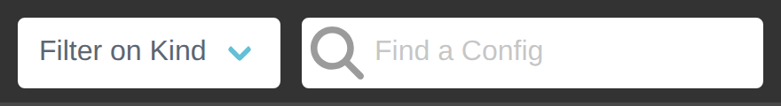
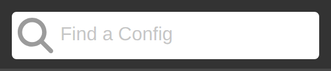
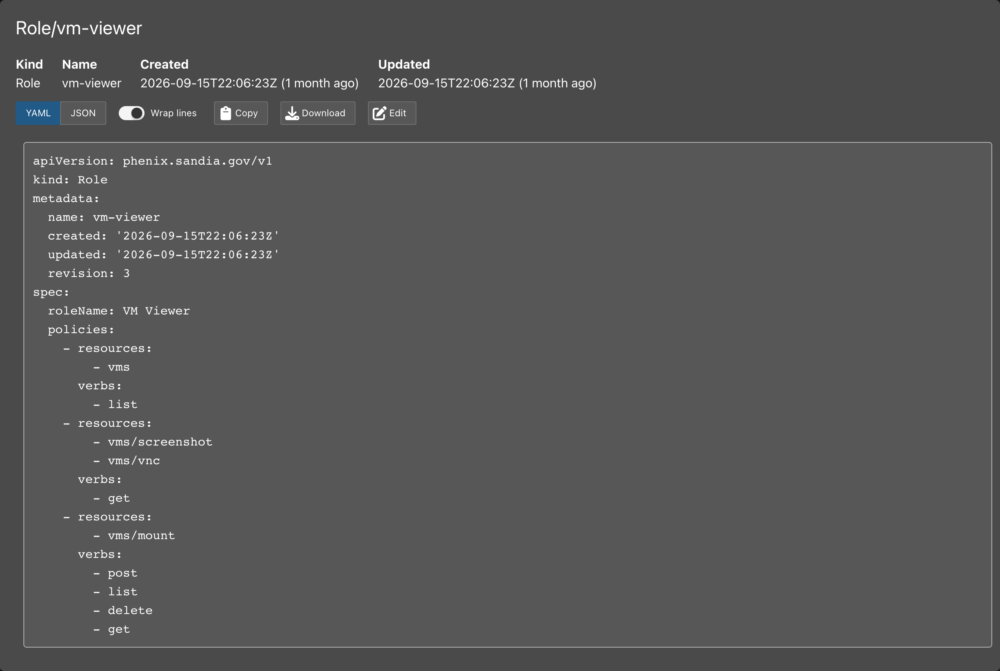
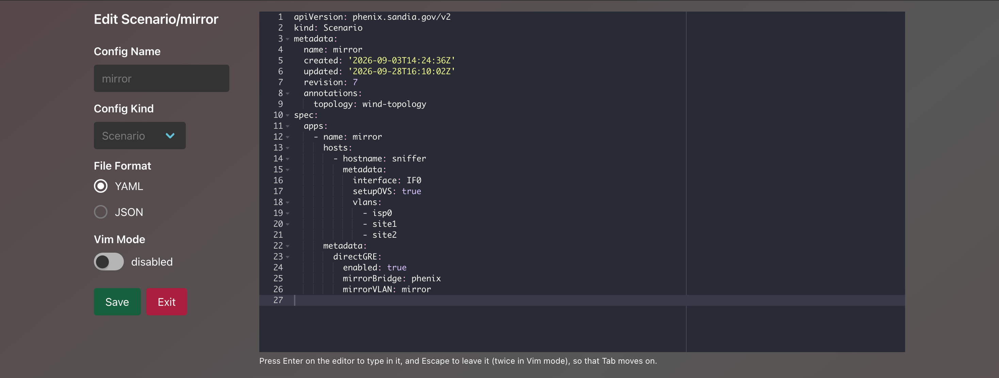
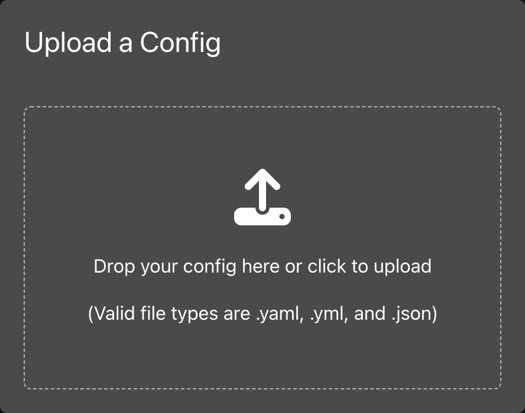
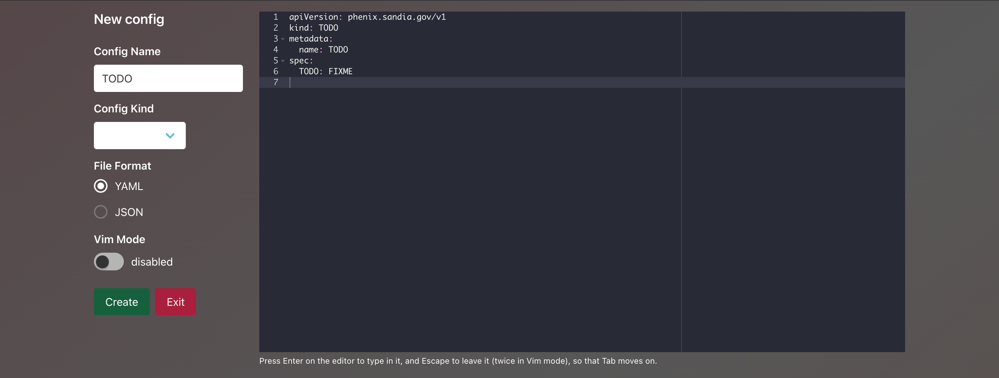
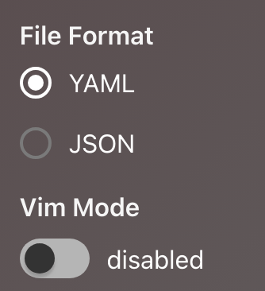

Configuration Files¶
phenix currently supports six (6) different configuration file types:
A Workflow file (apiVersion: phenix.sandia.gov/v0) is not a stored config:
phenix workflow apply sends it with
each apply (see Workflow).
Typically, users will create Topology and Scenario configuration files by
hand (or a topology with the Builder), while the rest will
be generated by phenix using available commands.
However, it is possible to create all configuration file types by hand if
necessary.
Tip
Configuration files can also be created, viewed, edited, and deleted via the Web-UI (see Web-UI section below).
Configuration files are versioned using a header section based heavily on what Kubernetes does. Each configuration file will have a header section that looks like the following:
In the example above, the kind field represents the type of configuration file
(e.g., Topology, Scenario, Image). The apiVersion field represents the
version the spec section conforms to (currently there is only v1 for all
configuration types except Scenario, which is v2), and the spec section
will contain the actual details for the configuration type based on the
configuration schema. Note that, at least in the header section, keys are
camel-case and begin with a lowercase letter, while values are camel-cased but
begin with a capital letter.
Info
Throughout the documentation, we mention creating configurations manually.
When we say this, we mean passing a YAML or JSON configuration file of any
type to the phenix config create command.
phenix config create, phenix config apply and phenix config diff
take files only: each argument is a .json, .yaml or .yml file, and
a directory is an error. To read every file of a directory, give dir/*
in a shell, such as phenix config create configs/*. The shell replaces
dir/* with the files of the directory before phēnix starts. A
subdirectory in the match is an error, so use dir/*.yml when the
directory has one. Use dir/*.yml when the directory also holds files
that are not configurations. The commands refuse a
Builder
document (see
Builder documents and phenix config create).
The first time phēnix runs with a new store, it also creates each config that
it finds below <base-dir.phenix>/configs (by default /phenix/configs). It
sets BRANCH_NAME to the name of the folder that holds the file, and skips a
file that parses but is not a valid config. A file that does not parse stops
the start with an error.
A config name can contain only letters, digits, _, @, . and -.
The metadata section can also hold annotations: text values by key, such
as the topology and scenario annotations of an Experiment.
The exception is builder-doc, a map of digest, id and path that names
the Builder diagram of a Topology (see
The builder-doc annotation).
Revisions¶
Every stored config gets metadata.created, metadata.updated and
metadata.revision, a number that increases each time the config is written.
phēnix sets these itself and ignores them in what you send.
metadata:
name: foobar
created: "2026-10-14T09:12:44-06:00"
updated: "2026-10-14T09:30:02-06:00"
revision: 42
If someone else saves the config while you're in phenix config edit, your
save is refused with
<kind/name> changed while you edited it, so run phenix config edit again.
Applying Files¶
phenix config apply creates the configs in the given files that aren't stored yet, and updates the stored ones that are different. phenix config diff prints a unified diff first and changes nothing. Both ignore the fields phēnix sets, such as the revision.
phenix config diff ./configs/*
phenix config apply ./configs/* --dry-run
phenix config apply ./configs/*
apply skips User configs, and can't update the config of a running
experiment. diff exits with 0 when nothing differs, 1 when something
does, and 2 when it can't compare a config.
Topology¶
The Topology configuration is one of the core configuration types for
phenix, as it describes a network topology to be deployed in minimega that
can be used by one or more experiments to be executed.
A topology is comprised of one or more nodes, which can either be a VM
(external: false - the default) or an external node (external: true), each
including system descriptions and configurations, as well as any networking
settings required to connect all of the nodes in a topology together. This
configuration becomes the basis for most of the minimega commands later created
in the relevant minimega startup script (at least for internal VMs).
Topologies can also include other topologies, using the includeTopologies
key. This feature allows users to include common components from an existing
topology. These includes can come from either the phēnix store (by name) or
from a file path to a topology on disk. Included topologies are merged into the
including topology.
phēnix looks for each name in the store first, then for a file at that path.
It adds the nodes of each included topology after the nodes of the including
topology. A hostname that is in both is an error, and so is a topology that
includes itself through other topologies. A topology needs nodes,
includeTopologies, or both.
Default Settings¶
If left unmodified or unset, the following are the default settings for each node:
- external will be set to
false - memory will be set to
512MB - vcpus will be set to
1 - cpu will be set to
Broadwell - vm_type will be set to
kvm - snapshot will be set to
true - no network settings will be included
- an interface without a
bridgeuses the default bridge of the experiment (phenixunless the experiment sets another)
Required Values¶
Each topology must have a unique name, which should be lowercase and not include spaces. In addition, each node in the topology must:
- have a specified type — the available types are defined in the schema
- have a unique hostname (phēnix ignores letter case when it compares them)
- have an OS type (
os_type) ofcentos,linux,minirouter,rhel,vyatta,vyos,windows, orother - have a disk image assigned
Warning
Hostnames must be between 2 and 63 characters long, can only contain alphanumeric characters and hyphens, and cannot begin or end with a hyphen. Hostnames should not be used as a FQDN. The 2-character minimum comes from guest operating systems: VyOS and Windows both reject 1-character hostnames.
Optional Values¶
Optional values for a node in the topology configuration can include:
- static network configurations
- specific memory values (e.g.,
1-16GB) - specific VCPUs values (e.g.,
1-4) - additional disk storage
- file injections (and main disk inject partition)
- labels, which are typically used by phēnix apps (for example the
ntp-serverlabel of the ntp app) - annotations, such as
phenix/default-apps(see Disable Default Apps for a VM) - routing ruleset(s)
- delay triggered by
user,timer, orc2(command and control) deletions,advanced,overrides, andcommands(see the node schemas)
Warning
If not specified, the default disk partition to inject files into is 1.
This will fail for a disk that is using LVM. In order to use a disk image
that's using LVM, set inject_partition: 0 on the first drive to force
phēnix to skip disk injections but still snapshot the base image. The
startup app will automatically deliver its generated scripts through C2;
other files configured for injection are still skipped. See
C2 Startup Script Delivery for the
requirements and configuration options.
Note
On Windows nodes, injection and deletion paths match existing files
regardless of case. The inject partition must be NTFS, and the minimega
host needs lowntfs-3g; without it, minimega silently falls back to a
case-sensitive mount.
Delay Start¶
It is possible to delay the start of a VM with the delay value. There are
three options available to set, but only one option can be set:
-
useris a boolean value and when set totruethe VM will require a manual start either through the phēnix UI or command line (the latter can be by phēnix or minimega commands). -
timeris a Golang duration string such as30s,5m, or1h30m. A timer that is not a duration is rejected. -
c2requires minimega command and control. Note in the example below that the hostnameAD1will be delayed starting until the VMhost-00has started and checked in with minimega command and control. It is possible to have multiple hostnames included.useUUIDis an additional boolean value setting, per hostname, that will watch for the UUID instead of the hostname to register with minimega command and control.
Note
If one or more VMs are set with a delayed start, the UI will display a blue
tag in the Delay column next to the Screenshot column. The tag will indicate
what type of delay was set. Once all the delayed VMs have started, the Delay
column will no longer be visible. For a timer delay, the tag and the VM
details card show the time until the VM starts, for example
starts in 4m 12s.
While VMs wait for a delayed start, the summary at the top of the running
experiment page shows a blue tag, for example 2 delayed VMs waiting, next
to the Running status. When a VM waits for a timer, the tag also shows
the time until the next VM starts, for example
2 delayed VMs waiting, next starts in 4m 12s. The VMs tile of the
summary also shows the number of delayed VMs. To see the tiles, click Details in the summary.
Note
If phenix ui restarts while timer or c2 delayed VMs are still
waiting, it picks them back up. If minimega no longer has a delayed VM,
the experiment is marked interrupted and its post-start apps don't run.
Restart the experiment to run them.
Network Address Translation (NAT)¶
For nodes of type Router or Firewall with an os_type of vyatta or
vyos (or the deprecated linux), the vrouter app can configure basic source NAT
to masquerade
packets from one or more networks out a specific interface. For example, assume
a router has three interfaces — eth0, eth1, eth2. eth0 is connected to
the Internet, while eth1, eth2 are connected to networks that use private IP
space. To masquerade packets from eth1, eth2 out eth0 the following
configuration could be used.
out and each in entry are interface names of the node, not networks. The
app masquerades the network of each in interface whose type is ethernet
and proto is static. It uses this nat list only when the vrouter app
metadata for the node has no snat rules.
External Nodes¶
There may be cases where an experiment includes external devices (hardware in
the loop) that should still be included in the topology for the purposes of the
State of Health network diagram, state of health
reachability checks, or for use by custom user apps. External nodes can be
included in the topology by marking them as external: true. Among other
things, this will prevent them from being deployed as a VM in minimega. The
configuration schema for an external node in the topology is defined
in the external node schema.
Danger
Do not use external: false for internal nodes that should be deployed in
minimega. Instead, don't include the external configuration key at all.
This is a quirk of how we internally decide which node schema should be used
(via oneOf).
An external node still requires a type, general.hostname, and (if you want
it to show up connected to anything in the topology graph) a network
section, just like a regular node. However, the external_node schema is
intentionally simpler than the schema used for minimega-deployed nodes:
- there is no
driveskey (external nodes have no disk image to snapshot or inject files into) - there is no
routes,ospf, orrulesetssupport, and phenix ignoresinjections,delay,advanced, andcommands(the schema accepts them), since none of those apply to a device that phenix doesn't deploy or control - network interfaces only support the flat set of fields shown in the
external_nodeschema (name,proto,address,mask,gateway,vlan). There's nooneOfbetween static/dhcp/serial interface types like there is for minimega nodes
- type: HIL
external: true
general:
hostname: plc-01
description: Physical PLC on the test bench
hardware:
os_type: linux
network:
interfaces:
- name: eth0
vlan: EXP-1
address: 192.168.10.50
mask: 24
proto: static
Special and Edge Cases¶
- Not deployed, not monitored by C2. External nodes are never started in
minimega and never run
miniccc, so they're excluded from the automated State of Health checks (network config, listening ports, processes, CPU load, etc.) that rely on C2. Their IP address(es) are still gathered from the topology, though, so they can be used as thesrcordstof atestCustomReachabilityentry to ping-test connectivity to/from the external device. skipHostsdoesn't apply. Since external nodes are already skipped from C2-based monitoring, the SoHskipHostssetting has no effect on them.- Interfaces on the
MGMTorMIRRORVLANs are ignored in the graph. The SoH topology graph builder skips any interface whose VLAN isMGMTorMIRROR(case-insensitive) when drawing connections, regardless of whether the node is external or a regular VM. vlancan be omitted, but then the node won't be connected to anything. If an external node's interface doesn't specify avlan, or the interface is left off entirely, the node will still appear in the SoH topology graph as an isolated node with no lines connecting it to anything else.- Getting a line drawn in the graph. To have phenix draw a line between an
external node and other nodes in the SoH topology graph, give the external
node a
network.interfaces[].vlanvalue that exactly matches thevlanvalue used on the interface(s) of the node(s) you want it connected to (the VLAN name acts as the shared switch/interface node in the graph). It doesn't matter whether the matching nodes are VMs or other external nodes — any two nodes sharing a VLAN name will be connected in the graph.
Example¶
A contrived, four node example — three VMs and a router — is given below, and is driven by the topology schema described here.
apiVersion: phenix.sandia.gov/v1
kind: Topology
metadata:
name: foobar
spec:
nodes:
- type: VirtualMachine
general:
hostname: host-00
snapshot: true
delay:
user: true
hardware:
os_type: linux
drives:
- image: ubuntu.qc2
injections:
- src: foo/bar/sucka.fish
dst: /data/sucka.fish
- src: /foo/bar/sucka/fish.sh
dst: /data/fish.sh
network:
interfaces:
- name: IF0
vlan: EXP-1
address: 192.168.10.1
mask: 24
gateway: 192.168.10.254
proto: static
type: ethernet
- name: IF1
vlan: MGMT
address: 172.16.10.1
mask: 16
proto: static
type: ethernet
- type: VirtualMachine
general:
hostname: host-01
snapshot: true
do_not_boot: false
delay:
timer: 5m
hardware:
os_type: linux
drives:
- image: ubuntu.qc2
network:
interfaces:
- name: IF0
vlan: EXP-1
address: 192.168.10.2
mask: 24
gateway: 192.168.10.254
proto: static
type: ethernet
- name: IF1
vlan: MGMT
address: 172.16.10.2
mask: 16
proto: static
type: ethernet
- name: S0
vlan: EXT
address: 10.0.0.1
mask: 24
proto: static
type: serial
udp_port: 8989
baud_rate: 9600
device: /dev/ttyS0
- type: VirtualMachine
general:
hostname: AD1
snapshot: true
delay:
c2:
- hostname: host-00
useUUID: false
hardware:
os_type: windows
drives:
- image: win-svr-2k8.qc2
network:
interfaces:
- name: IF0
vlan: EXP-1
address: 192.168.10.250
mask: 24
gateway: 192.168.10.254
proto: static
type: ethernet
- name: IF1
vlan: MGMT
address: 172.16.10.3
mask: 16
proto: static
type: ethernet
- type: Router
labels:
ntp-server: IF0
general:
hostname: router-00
snapshot: true
hardware:
os_type: vyatta
drives:
- image: vyatta.qc2
network:
interfaces:
- name: IF0
vlan: EXP-1
address: 192.168.10.254
mask: 24
proto: static
type: ethernet
ruleset_in: test
- name: IF1
vlan: MGMT
address: 172.16.10.254
mask: 16
proto: static
type: ethernet
rulesets:
- name: test
default: drop
rules:
- id: 10
action: accept
protocol: udp
source:
address: 1.1.1.1
port: 53
Scenario¶
The Scenario configuration is used to define and configure one or more
phenix apps (default or user) for
use with a topology. In this sense, a topology can have one or more scenarios
associated with it, but a scenario can only be associated with a single
topology.
The scenario names its topology in its topology annotation. phēnix refuses to
use a scenario without this annotation in an experiment.
Apps¶
A phenix app can be applied to an experiment topology using a single
configuration, a per-host configuration, or both. Examples could include:
- a
phenixapp that adds a minimega tap to all hosts in the cluster, - one that injects the same file into every node in the experiment topology, or
- one that configures a VPN between two nodes in an experiment using WireGuard.
The first two examples would involve a single configuration, while the last example would use a per-host configuration because (1) only two nodes will be modified, and (2) each of the two nodes will require different configurations (e.g., one will be a WireGuard client and the other a WireGuard server). Each configured app can contain a list of topology nodes to apply the app to, along with custom metadata for the app specific to the topology node.
App Configuration Options¶
-
assetDir: used by apps to generate absolute path to asset files when relative paths are provided in app metadata. The default is an empty string. -
disabled: whentrue, phēnix skips the app at theconfigure,pre-start,post-start, andcleanupstages. A trigger of therunningstage still runs it, and so does a trigger that names the app. A pending cleanup of the app also still runs. The default isfalse. -
fromScenario: name of another scenario config to pull this app config from. This allows for defining complex app configurations in a single base scenario and referencing it from scenarios included in experiments. The default is an empty string. -
hosts: a list of per-host configurations to apply to the experiment topology. The default isnil.-
hostname: the name of the experiment VM to apply this per-host metadata to. -
metadata: app metadata to apply to this experiment VM. The default isnil.
-
-
metadata: app metadata to apply to this experiment. The default isnil. -
name: the name of the app being configured. There is no default value; one must be provided. -
runPeriodically: a Golang duration string specifying how often to trigger the app's running stage. The default value is an empty string, which means the app's running stage will not be triggered periodically.
Example¶
The following is an example of a configuration for a scenario named foobar,
which can only be applied to an accompanying topology named foobar (while
these names are the same in this example, the topology and scenario names do not
have to match). Included in this scenario are apps named miniccc-injector,
startup, protonuke, and wireguard. Each entry in the list of app hosts
includes custom app metadata and the hostname of the topology node to apply the
metadata.
apiVersion: phenix.sandia.gov/v2
kind: Scenario
metadata:
name: foobar
annotations:
topology: foobar
spec:
apps:
- name: miniccc-injector
metadata:
# files to inject into each node in experiment, based on OS type
linux:
src: /phenix/injects/miniccc
dst: /usr/local/bin/miniccc
windows:
src: /phenix/injects/miniccc.exe
dst: phenix/miniccc.exe
- name: startup
hosts:
- hostname: host-00 # hostname of topology node to apply it to
metadata:
domain_controller:
domain: example.com
ip: 10.0.0.1
username: admin
password: SuperSecretPassword
- name: protonuke
hosts:
- hostname: host-01 # hostname of topology node to apply it to
metadata:
# protonuke app metadata for this topology node
args: -logfile /var/log/protonuke.log -level debug -http -https -smtp -ssh 192.168.100.100
- name: wireguard
hosts:
- hostname: AD1 # hostname of topology node to apply it to
metadata:
# wireguard app metadata for this topology node
infrastructure:
private_key: GLlxWJom8cQViGHojqOUShWIZG7IsSX8
address: 10.255.255.1/24
listen_port: 51820
peers:
public_key: +joyya2F9g72qbKBtPDn00mIevG1j1OqeN76ylFLsiE=
allowed_ips: 10.255.255.10/32
Note
The above example includes an app named startup, which is a phēnix
default app. Meaning, it is possible to configure default phēnix apps in a
scenario configuration, not just user apps.
Info
See Scorch for additional information on Scenario Orchestration
Experiment¶
Experiment configurations represent the combination of topologies and
scenarios to form an experiment (it should be noted that experiments do not
require a scenario).
Experiment configurations are
created from an existing topology and
an optional scenario, with
phenix experiment create or the
web UI. A
configuration file holding only the header below is not enough: its spec must
already hold the experiment, so phenix config create rejects it. The header
of an experiment named foobar, created from a topology named foobar and a
scenario named foobar (none of the names are required to match), looks like
this:
apiVersion: phenix.sandia.gov/v1
kind: Experiment
metadata:
name: foobar
annotations:
topology: foobar # this is required
scenario: foobar # this is optional
spec:
...
The experiment configuration has the topology and scenario configurations embedded in it, as well as additional details like cluster host schedules for VMs, VLAN ranges, etc. The advantage of embedding the topology and scenario into the experiment is that they can be modified in the experiment without modifying the originals.
The spec of an experiment holds these fields:
topologyandscenario: the embedded topology and scenario.baseDir: the working folder of the experiment. The default is<base-dir.phenix>/experiments/<name>.defaultBridge: the bridge for each interface that does not set its own. The default isphenix, and the name can have at most 15 characters. See Bridge Mode.vlans:aliases, which maps each VLAN name to a VLAN ID, andminandmax, the range of VLAN IDs for the experiment. See VLANs.schedules: maps each VM hostname to the cluster host that runs it.deployMode:all,no-headnode, oronly-headnode, the cluster hosts that can run VMs.phenix experiment createcopies thedeploy-modesetting (see Settings).useGREMesh: whentrue, GRE tunnels connect the cluster hosts for this experiment. Creation turns it on when theuse-gre-meshsetting is on. See GRE Mesh.experimentName: the name of the experiment, which phēnix sets.
From the Web-UI or the API, spec.baseDir must be a folder in
<base-dir.phenix>/experiments (an update can keep a stored base directory
that's outside it). phenix config create doesn't have this limit.
Image¶
The Image configuration is used to generate VM disk images using a specific
and custom version of vmdb2. Representing
a disk image in a configuration like this allows for the same disk image to
easily be built in different clusters without having to actually move large
disk image files.
Warning
The phēnix image capability will only generate Linux based images. It will not generate Windows disk images.
Typically image configurations are
created automatically by the
phenix image create command, but users can also create them manually using a
configuration file similar to the one shown below. This file can then be created
in the phēnix store using the phenix cfg create <path-to-file> command
(cfg is an alias of phenix config). A
new phēnix store starts with the image configs PHENIX-caldera,
PHENIX-elasticsearch, PHENIX-kali, and PHENIX-packetbeat. The
Image schema lists every field.
apiVersion: phenix.sandia.gov/v1
kind: Image
metadata:
name: foobar
spec:
format: qcow2
mirror: http://us.archive.ubuntu.com/ubuntu/
overlays: []
packages:
- initramfs-tools
- net-tools
- isc-dhcp-client
- openssh-server
- init
- iputils-ping
- vim
- less
- netbase
- curl
- ifupdown
- dbus
- linux-image-generic
- linux-headers-generic
release: bionic
size: 5G
variant: minbase
script_order:
- POSTBUILD_APT_CLEANUP
- POSTBUILD_NO_ROOT_PASSWD
scripts:
POSTBUILD_APT_CLEANUP: |
apt clean || apt-get clean || echo "unable to clean apt cache"
POSTBUILD_NO_ROOT_PASSWD: |
sed -i 's/nullok_secure/nullok/' /etc/pam.d/common-auth
sed -i 's/#PermitRootLogin prohibit-password/PermitRootLogin yes/' /etc/ssh/sshd_config
sed -i 's/#PermitEmptyPasswords no/PermitEmptyPasswords yes/' /etc/ssh/sshd_config
sed -i 's/PermitRootLogin prohibit-password/PermitRootLogin yes/' /etc/ssh/sshd_config
sed -i 's/PermitEmptyPasswords no/PermitEmptyPasswords yes/' /etc/ssh/sshd_config
passwd -d root
Warning
The build runs only the scripts that script_order names, in that order.
A script that is in scripts but not in script_order does not run.
User¶
The User configuration tracks phēnix UI user settings (e.g., username,
password, and RBAC permissions). Typically user configurations are created
automatically when a UI admin creates a new user via the UI, but they can also
be created manually using a configuration file similar to the one shown below.
The phenix admin commands also create users (see
User Administration). password holds
the bcrypt hash of the password, not the password itself.
apiVersion: phenix.sandia.gov/v1
kind: User
metadata:
name: admin@foo.com
spec:
username: admin@foo.com
first_name: Admin
last_name: Istrator
password: '<encrypted-password>'
rbac:
roleName: Global Admin
policies:
- resourceNames:
- '*'
resources:
- '*'
- '*/*'
verbs:
- '*'
- resourceNames:
- admin@foo.com
resources:
- users
verbs:
- get
Role¶
The Role configuration is used to represent a named set of RBAC permissions
that represent a user's role in the UI. When a new user is created, the role
that user should have is specified, and using that role name the appropriate
RBAC permissions are copied from the role configuration into the user
configuration.
There are nine (9) default role configurations that get created automatically:
the eight described under built-in roles,
and Disabled, which allows nothing. An example role configuration is shown below
for completeness.
apiVersion: phenix.sandia.gov/v1
kind: Role
metadata:
name: global-admin
spec:
roleName: Global Admin
policies:
- resourceNames:
- '*'
- '*/*'
resources:
- '*'
- '*/*'
verbs:
- '*'
Resource names are matched with the same Kind/name or experiment/vm shape
as the resource they belong to, and a * never crosses the /, which is why
this role lists both * and */*. See
Resources.
Web UI¶
Config Table¶
The Configs component will initially load with a table presenting all the
available configuration files. It is possible to filter in two ways:
- There is a pull-down selector, which will allow filtering on a specific
Kindof config. ChoosingAll kindsputs every kind back in the table.
- A separate
Find a Configfield will allow filtering onName(if you have filtered onKind, it will be limited to that kind of config).


Clicking on the X next to the Find a Config field will reset both filters.
The totals strip above the table counts the configs of each kind. Click the
count of a kind to filter on that kind. Click the Configs total, or the
count of the kind again, to show all kinds. The Kind selector shows the same
filter.
The In Use column shows an icon for a topology or scenario that an
experiment uses. An experiment uses the topology or scenario that its
topology or scenario annotation names. This includes experiments that are
not running. Hold the pointer on the icon to see the names of the experiments.
For the other kinds of config, the column is empty.
Select the check boxes of one or more configs to download them (two or more
come as configs.zip) or delete them all with the buttons above the table.
View a Config¶
There are two ways to view a specific config:
- Clicking the name of the config entry will open a modal to view the config.
It is possible to select text and copy from this modal. However, it is not
possible to edit the config directly in this view. Instead, there is an
Editbutton, which will open an editor. It is also possible to download a copy of the config. A topology or scenario name on theExperimentspage opens its config in this viewer, too. The annotations of the config show next to its title. Above the text, the viewer shows the kind, name, creation time and update time of the config. Use theYAMLandJSONbuttons to change the format of the text. UseWrap linesto wrap long lines, andCopyto copy the text. The viewer of an experiment config has a button next to its title that opens the experiment page. The viewer of a topology or scenario lists the experiments that use it.
- Selecting the
Editbutton for a given config will open the editor window. It is possible to edit the config in this window and save the update to the phēnix store. The config will be validated against the schema, and if invalid, an error will be presented.


Topologies with a Builder diagram¶
A topology with a Builder diagram has the tag builder,
and its Edit button opens the Builder, not the editor window, for a role
with builder use. Other roles see an alert (see
From the Configs page).
For a role with builder use, the tag is a link into the Builder, and the
viewer of a topology has an Open in Builder or Import into Builder button.
A topology with a diagram from the old Topology Builder has the tag
builder legacy, and its Edit button opens the editor window.
Create a Config¶
There are two ways to create a new config:
-
Selecting the
Uploadbutton located to the far right of the search field will allow you to upload a file from disk. It is possible to drag and drop in the upload modal or click the upload icon to open a file browser.
Note
Only files with the extensions
.yml,.yaml, and.jsonwill be allowed. Any file uploaded will be validated against the schema for a given kind of config, and if invalid, an error will be presented. -
Clicking the
+button next to the search field will present an editor window where it is possible to create a new file in place. A basic template is provided based on the kind of config selected (see next section for documentation on the editor window features). Once editing a config is completed, clicking theCreatebutton will post it server-side where it will be validated, similar to file upload. If invalid, an error will be presented.


Editor Window¶
The editor window allows direct editing of an existing or new config file.
-
To use the editor from the keyboard, see Accessibility.
-
It is possible to edit a file as YAML or JSON by selecting the relevant radio button under
File Format. -
It is also possible to set keybindings to the Vim editor by enabling them with the sliding selector under
Vim Mode.

If someone else saved the config after you opened it (see
Revisions), the Config Changed dialog lets you reload it (and
lose your edits), overwrite anyway, or cancel and keep editing.

New Config¶
The editor window for creating a new config will allow editing the filename in a text field to the left or within the config editor directly. Similarly, use the pull-down selector to the left to select the kind of config or within the config editor.

Selecting the Create button will post the new config server-side for
validation and addition to the store. Choosing the Exit button will leave the
editor window; nothing will be saved.
Existing Config¶
Changing the name in an existing config is only available through the editor window.

Selecting the Save button will post any updates server-side for validation and
addition to the store. Selecting the Exit button will leave the editor window;
nothing will be saved.
Save asks you to confirm first. The editor of a running experiment has no
Save button. If you changed the text, Exit asks you to confirm that you
want to lose your edits.
Delete a Config¶
Selecting the delete icon will delete a config. A confirmation dialog will be
presented to confirm the selection. Once the config is deleted, it cannot be
restored to the store. If an experiment config is deleted, the corresponding
experiment will no longer be presented in the Experiments tab.

From the command line,
phenix config delete all [kind] deletes every config,
or every config of one kind, except the config of a running experiment. Add
--dry-run to see what it would delete:
Environment Variables¶
Phēnix supports environment variables in its configuration files. When the
CLI reads a config file, such as with phenix config create <file>, it
replaces each environment variable placeholder with the value of that
variable. Placeholders can be in the format ${VAR} or
${VAR:default}, where VAR is the environment variable name, and default
is an optional default value to use if the variable is not set. If the
variable is not set and no default is provided, the command stops with an
error and changes nothing. Write ${VAR:} for a variable that can be empty.
A $VAR without braces is not a placeholder. Write $${VAR} to keep the
text ${VAR} in the config.
Note
For a config sent to the REST API or the web UI (POST /configs,
PUT /configs/{kind}/{name} and the workflow endpoints), with a JSON or
YAML body the server fills in only ${BRANCH_NAME}. It stores every other
placeholder as written, so a client cannot read the server environment
through a config. Of these, only the workflow endpoints take variables, in
the variables part of a multipart/form-data request; the server then
also fills in the placeholders from the variables and their defaults (see
REST API).
POST /configs and PUT /configs/{kind}/{name} do not: a client fills in
the other placeholders before it sends a config. The Builder fills in no
placeholders. A
${BRANCH_NAME} in these requests is filled in also when the stored config
holds it as text. For POST /configs and PUT /configs/{kind}/{name},
the value is the BRANCH_NAME variable of the server, or empty text when
it is not set. Write $${BRANCH_NAME} to keep the text.
Example config before parsing environment variables:
After parsing with HOST=172.1.3.37:
Or if HOST env variable isn't found, the default is used:
Variable Sources¶
These commands read config files and fill in their placeholders:
phenix config create, phenix config apply, phenix config diff,
phenix experiment create with a file for -t or -s, and
phenix workflow apply. phenix experiment create also fills in a topology
file that includeTopologies names by a path, and so does the server for
phenix workflow apply. A command gets the value of a
variable from the first of these sources that has it:
| Source | Description |
|---|---|
-e, --env |
-e NAME=value sets a variable. -e NAME copies the value of NAME from the shell. Repeat the flag for more variables. If a name is given more than once, the last value is used. |
--env-file |
An env file of NAME=value lines. Repeat the flag for more files. A later file overrides an earlier file. A relative path starts at the working directory. phenix workflow apply reads .env in the topology directory when no --env-file is given. |
| The shell | The environment of the command, without the variables whose names start with PHENIX_. Those variables hold the settings of phēnix. Name one with -e NAME to use it. A variable whose name is not a valid variable name, for example 1A, is not used. |
phenix config create topology.yml -e HOST=172.1.3.37
phenix config apply configs/* --env-file site.env -e NODES=3
A command reads every file and checks every variable before it changes anything. It stops, and changes nothing, in these cases:
- A placeholder has no value and no default.
- No file uses a variable that
-esets. This is usually a typing mistake. - A value or a default contains a line break.
The command replaces the text of a placeholder before it reads the YAML or
JSON. Thus a placeholder in a comment is also filled in, and a value can
change how YAML reads a line. Put a placeholder in quotes when its value can
contain : or #.
phēnix does not have the Docker Compose forms ${VAR:-default} and
${VAR:?error}. For phēnix, the default of ${VAR:-3} is the text -3.
The command logs a warning for a default that starts with - or ?.
The log shows the name and the source of each variable that a file uses. It
shows the values only with --log.level debug. Debug records can thus hold
secrets, also in the log file.
Warning
In earlier releases, a variable that was not set became an empty string,
and the CLI used every shell variable. A config that relied on this now
stops the command. Give the placeholder a default, such as ${VAR:}, or
name a PHENIX_ variable with -e.
Env Files¶
An env file holds one variable on each line:
# Blank lines and lines that start with "#" are skipped.
SITE=lab
NODES=3
export IMAGE=ubuntu.qc2
MOTD=" the quotes keep the spaces "
- A line is
NAME=value, with no space before the=. A name starts with a letter or_, and continues with letters, digits and_. exportbefore the name is permitted.- A value in single or double quotes is the text between the quotes. The closing quote must be the last character of the line.
- Any other value is the text as written, a
#included, without the spaces and tabs at the end of the line. - Nothing in the file is expanded:
${OTHER}and\nstay as written. For a workflow, the server fills in a${BRANCH_NAME}that a value carries. - When a name is on more than one line, the last line is used.
- Any other line is an error that names the file and the line.
Environment variables using Docker¶
If phēnix is running in a docker container (or docker compose), environment variables can be passed into the compose file and/or via args in any CLI calls to phēnix, e.g.
or
Tip
Configs sent by phenix workflow apply, or to the
/workflow/configs/{branch} and /workflow/apply/{branch} API endpoints,
don't need -e BRANCH_NAME: phēnix sets BRANCH_NAME to the workflow
branch name itself. The API endpoints keep their other placeholders as
written unless the request sends variables, and phenix workflow apply
sends its variables with each config (see
Variables). The
command also copies the topology directory's
phenix-injects/ to <base-dir.injects>/<name> (by default
/phenix/injects/<name>), so configs can reference injected files as
/phenix/injects/${BRANCH_NAME}/<file>. See Workflow.
See Also¶
- phenix config: every config command and flag.
- Schema: the full schema of each config kind.
- Experiments: create and start an experiment from your configs.
- Apps: the apps that read topology fields and scenario metadata.
- Workflow: deploy a directory of configs with one command.
- Builder: draw a topology as a diagram.
- User Administration: users, roles, and policies.